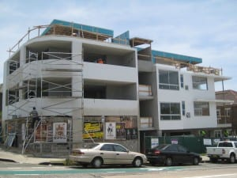

Over the last few months I snapped some pics of the development of the old police station in Wairoa Avenue. Here’s one of the images showing the development of the site.

Once the Bondi Police Station, now modern apartments.
A block of 1920s-30s art deco units beside the old Bondi police station is also now up for sale.

Another art deco block in Bondi to bite the dust?
I wonder what’s to become of this block? How many new apartments will it be transformed into? or maybe it will become another Bondi McMansion?
]]>